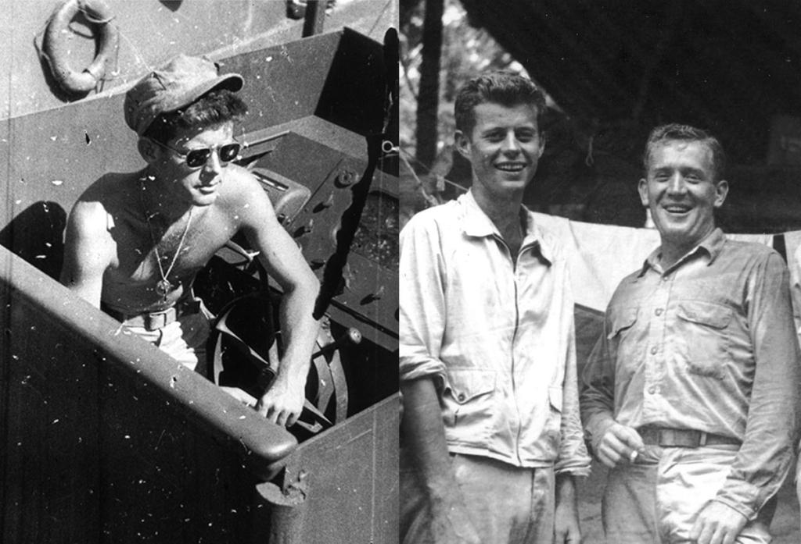

Ketika Amerika Serikat memasuki Perang Dunia II pada 1941, John bergabung dengan Angkatan Laut Amerika Serikat atau U.S. Navy.Ia bertugas di kawasan Samudra Pasifik, tempat Amerika menghadapi Jepang.
Pada 1943, John mendapatkan komando kapal patroli torpedo bernama PT-109. Pada malam 2 Agustus 1943, kapal tersebut ditabrak oleh kapal perusak Jepang di dekat Kepulauan Solomon. Kapal PT-109 hancur dan beberapa awaknya meninggal dunia. John sendiri mengalami cedera, tetapi ia berusaha menyelamatkan anggota awak yang masih hidup. Salah satu tindakan yang paling dikenal adalah ketika ia membantu seorang awak yang terluka dengan berenang sambil menariknya menggunakan tali pengikat pelampung.
Setelah itu, John dan para awak yang selamat berusaha mencapai sebuah pulau kecil. Mereka akhirnya berhasil mendapatkan pertolongan. Atas tindakannya, John menerima Navy and Marine Corps Medal atas keberanian dan kepemimpinannya. Pengalaman tersebut membuat namanya dikenal sebagai veteran perang yang memiliki keberanian dalam situasi berbahaya. Namun, perang juga membawa tragedi bagi keluarganya. Kakaknya, Joseph Kennedy Jr., meninggal pada Agustus 1944 ketika menjalankan misi militer udara. Kematian Joseph membuat John semakin dekat dengan tanggung jawab politik yang sebelumnya diproyeksikan kepada kakaknya